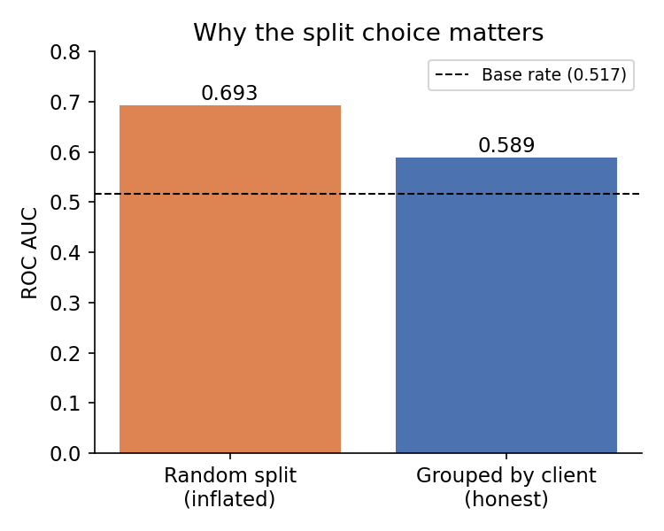
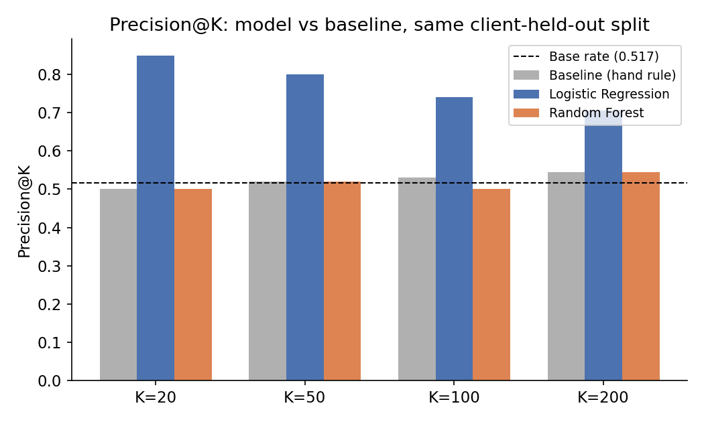
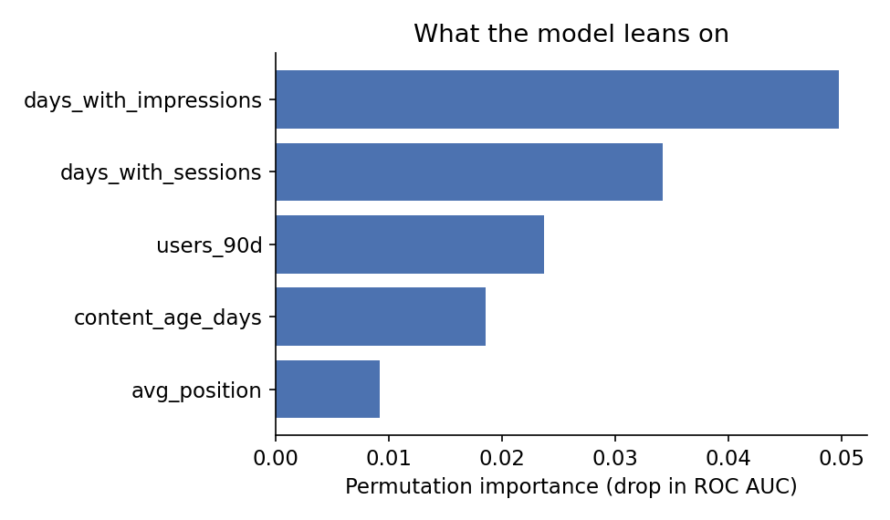
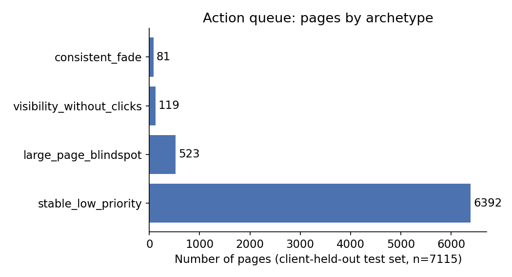

Abstract
Question: among FlyRank's anonymized content-performance data, which observable signals are associated with a page's visibility declining, and is that association strong enough to rank a review queue better than a transparent hand-written rule?
Method: a Logistic Regression and a Random Forest were trained on 23 current-window, non-label, non-ID features from 30,000 pseudonymized content items across 32 clients, validated with a client-held-out split (never mixing a client's rows across train and test), and compared against a staleness-and-CTR-gap baseline on the exact same split.
Result: Logistic Regression beats the baseline on precision@K at every K tested (0.85 → 0.705 as K grows from 20 to 200, against a 0.517 base rate), while Random Forest — despite a higher ROC AUC — performs no better than the baseline on that same metric. The honest, client-held-out AUC (0.589) is meaningfully lower than the number a naive random split would report (0.693).
What it's for: a decision-support queue that tells a content reviewer which existing pages to open first this cycle — not a forecast, and not a replacement for human judgment on any single page.
1 · Introduction
The problem this supports
A content team managing thousands of pages across dozens of clients can't manually review everything every cycle. Someone has to decide which pages get looked at first. Today that's usually a hand rule — "flag anything stale and underperforming" — because it's transparent and everyone trusts the logic. The open question is whether that rule is actually catching the right pages, or whether it's just the thing that's easiest to explain.
This paper asks a narrower, checkable version of that question: on FlyRank's own anonymized data, does a hand rule and a trained classifier agree on which pages are declining — and where they disagree, which one is actually right? The answer determines whether a reviewer's queue should keep coming from a rule they can read line-by-line, or from a model whose reasoning is one step removed.
2 · Data
30,000 pages, 32 clients, one snapshot each
This project uses the starter release shipped with the internship repo — content_refresh_anonymized.csv — not the 79-million-row warehouse. Every row is a pseudonymized content item (content_id); every item belongs to one of 32 pseudonymized clients (client_id), with row counts per client ranging from 3 to roughly 7,000. There is no report_date column — each row is a single trailing-90-day snapshot, with a nested last-30-days-vs-previous-30-days comparison inside that same window. That means this data can say whether a page is currently flagged as declining, but not when the decline started or how fast it's moving.
What was excluded, and why
trend_direction,trend_pct— these define the label itself. Using them as inputs would be leakage by definition.impressions_last_30d,impressions_prev_30dand their click/session equivalents — verified to correlate 1.000 with the valuetrend_pctis computed from; including them lets a model reconstruct the label through arithmetic, not genuine signal.content_id,client_id— pseudonymous identifiers, used only for grouping and train/test splitting, never as model inputs.provider_used(71.5% missing),model_used(19.1% missing) — internal production-tooling metadata, not a search-performance signal.- Pre-built
*_tierbucket columns — bucketed duplicates of raw numeric fields already in the feature set; including both would double-count one signal.
Public-safety note: the shipped file is pre-anonymized to pseudonymous IDs only. No client names, URLs, domains, or raw queries appear anywhere in this project.
3 · Methodology
Label, baseline, model, and the checks that keep them honest
Label. is_declining_label = (trend_direction == "down") — an observed, already-computed outcome, not a rule invented for this project and not a forecast of the future.
Baseline. A transparent rule: flag a page if it's stale (no update in 90+ days) AND visible (≥500 impressions in 90 days) AND has a CTR gap (click-through rate below its position tier's median). Staleness alone did not hold up as an independent signal when checked directly against the label — decline rate stayed close to the base rate across the two well-sampled freshness tiers — so the rule gates on the CTR-vs-position signal, which did hold up, rather than trusting staleness by itself.
Model. Logistic Regression and Random Forest, trained on the same 23-feature set: current-window engagement, consistency, and content-context signals, with no label-window totals, no IDs, and no product-tooling flags.
Validation design. GroupShuffleSplit on client_id, 25% held out, every client entirely in train or entirely in test — never both. This is not a formality: the same Logistic Regression scored under a naive random row-level split reports 0.693 ROC AUC; under the honest, client-held-out split it drops to 0.589. A 0.10-point gap that a random split would have quietly hidden.

Leakage checks. Two were run, not assumed clean: (1) trend_pct was deliberately added as a feature — AUC jumped from an honest 0.599 to a leaked 1.000, confirming the label-derived-feature trap is real. (2) The eight 90-day window totals that arithmetically overlap the label's 30-day windows were removed and the model re-scored — AUC changed by 0.001, a near-zero collapse, so they were kept, but the check is logged rather than skipped.
4 · Results
A higher AUC doesn't always mean a better queue
Random Forest scores higher on ROC AUC (0.604 vs. 0.589 for Logistic Regression) — the metric most people report first. But the decision this project actually supports isn't "can something discriminate the classes," it's "of the top K pages I flag, how many are really declining." On that metric, precision@K, Random Forest performs no better than the hand-written baseline at every K tested, while Logistic Regression clearly wins.

| K | Baseline | Logistic Regression | Random Forest | Base rate |
|---|---|---|---|---|
| 20 | 0.500 | 0.850 | 0.500 | 0.517 |
| 50 | 0.520 | 0.800 | 0.520 | 0.517 |
| 100 | 0.530 | 0.740 | 0.500 | 0.517 |
| 200 | 0.545 | 0.705 | 0.545 | 0.517 |
Permutation importance on the winning model (Logistic Regression) shows the top signals are about consistency, not raw scale — how many of the last 90 days actually had recorded impressions or sessions, more than how big the page is.

5 · Limitations
What this work cannot claim
The claim ladder below states exactly what this project's evidence supports, and stops there.
trend_direction == "down") — not a prediction of what happens next.- Validated on 8 held-out clients, from 32 total — a client whose content mix or scale looks very different from these 32 is out of validated scope until re-checked.
- Single snapshot, not a time series — no way to see when a decline started or how fast it's moving.
- This is the 30,000-row starter slice, not the 79-million-row warehouse — untested at that scale or client diversity.
- 11.3% of rows have no usable label at all and were excluded from label-dependent work rather than imputed.
6 · Ranked recommendations
The action queue
The queue is capped at the top 200 rows by predicted probability — the deepest K actually validated (precision@200 = 0.705). Four archetypes come directly from the error analysis above, not from a separate clustering step.

| Archetype | n | Suggested action |
|---|---|---|
consistent_fade | 81 | Refresh content — update facts, re-check target keyword. |
visibility_without_clicks | 119 | Check title / meta / snippet first — likely a CTR problem, not a decline problem. |
large_page_blindspot | 523 | Spot-check manually despite a low score — matches the demonstrated false-negative profile. |
stable_low_priority | 6,392 | No action this cycle. |
- Auto-deleting, de-indexing, or unpublishing content based on a score.
- Auto-publishing rewritten content without a human reading the draft.
- Any external claim that this model "predicts" decline.
- Scoring a client type outside the 32 validated ones without flagging it as unvalidated.
7 · Reproducibility
Rerun it yourself
Every number on this page comes from notebooks in the repo below, in this order:
- w01 — research question
- w02 — ML task framing
- w03 — data contract
- w04 — baseline score
- w05 — model
- w06 — validation audit
- w07 — action playbook
- capstone — this paper, end to end
To rerun from a fresh clone:
Random seed 42 throughout. All splits use GroupShuffleSplit on client_id.